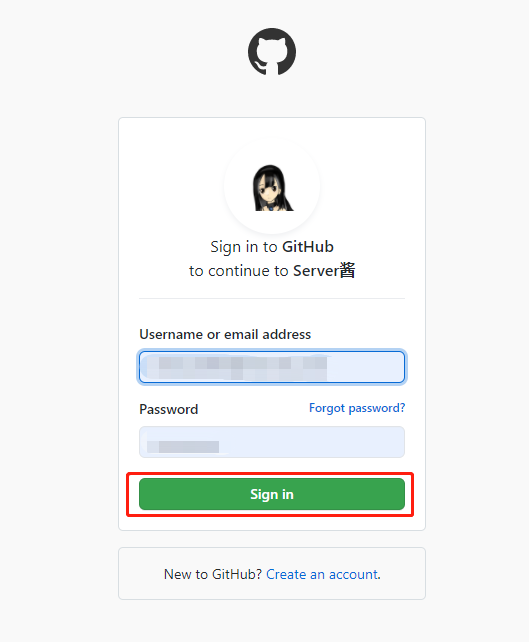
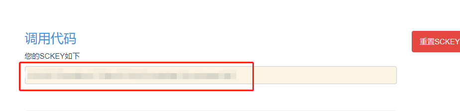

上一篇 利用 Tasker 实现短信自动转发：截取短信 我们知道了如何把短信存储到 Tasker 中，既然已经存储了，那么肯定是要推送出去嘛； 推送到微信的话，我们要借助第三方信息推送平台。 这里列举了 Server 酱 ，如果您习惯其他平台，方法类似，可以作为参考；
前期准备
进入 Server 酱 官网
点击登入：

这里是直接用 Github 授权登录的，输入 Github 账号直接授权：

接下来要绑定微信，点击微信推送，拿手机微信扫码后关注：
点击发送消息，会看到 Server 酱给你的 SCKEY：

通过 Server 酱推送到微信
为了方便以后修改，我们在手机的 Tasker 中新建一个以 % 开头的变量，变量名随意，我命名 %SCKEY：
然后我们把获得的 SCKEY ，填入 %SCKEY 中：
在 任务Tab 栏 新建一个任务；
点击 网络 → HTTP Request
「Method」选择 GET
「URL」输入：
https://sc.ftqq.com/%SCKEY.send?text=<这里把包括尖括号内的文字替换成想要的标题>&desp=%VERIFICATION_CODE
直接返回到首页，再点击右上角的 ✓ 保存，Server 酱的配置就完成啦！
我们来测试一条带验证码的短信，看看能不能推送到微信里：

微信收到Server酱推送啦
点进去查看消息：
成功接收！至此，通过 Server 酱推送到微信就完成啦！